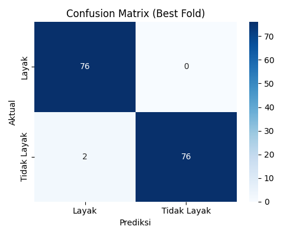

📊 Informasi Analisis Data Model SVM
⚙️ Seleksi Fitur dan Preprocessing Dataset
🔠Probabilitas Setiap Atribut
🌟 Fitur Terpilih
🔄 Transformasi Data
| Diagnosis |
| Sebelum |
Sesudah |
| B (Benign) |
0 |
| M (Malignan) |
1 |
⚙️ K-Fold Cross Validation & Confusion Matrix
📈 Hasil K-Fold Cross Validation
| Fold |
TP |
FP |
FN |
TN |
Akurasi |
Presisi |
Recall |
F1-Score |
🆠Best Model dari K-Fold
| Iterasi (Fold) |
TP |
FP |
FN |
TN |
Akurasi |
Presisi |
Recall |
F1-Score |
| 10 |
20 |
0 |
1 |
35 |
0.9821 |
1.0000 |
0.9524 |
0.9756 |
🯠Confusion Matrix

📊 Agregasi K-Fold Cross Validation
| Rata-rata Akurasi |
Rata-rata Presisi |
Rata-rata Recall |
Rata-rata F1-Score |
| 0.9421 |
0.9357 |
0.9102 |
0.9210 |